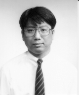

TM1272
高橋 千恵,森田 幸伯,西岡 利博,津田 宏
``演繹オブジェクト指向データベースシステムQuixoteの特徴と実現''
93年7月
TR0158
Y.Morita,H.Yokota,K.Nishida,H.Itoh
``Retrieval-By-Unification Operation On a Relational Knowledge Base Model''
1986 02.
TR0384
H.Sakai,S.Shibayama,A.Nakase,H.Monoi,Y.Morita,H.Itoh
``The Design and Implementation of a Knowledge Base Machine Mu-X''
1988.05
TR0299
宮崎 収兄,山下 祥司,羽生田 博美,森田 幸伯,伊藤 英則
``分散知識ベース管理システムPHI''
1987.09
TR0347
A.Nakase,S.Shibayama,H.Sakai,Y.Morita,H.Monoi,H.Itoh
``Structual Superimposed Codeword as an Indexing Scheme for Terms''
1988.03